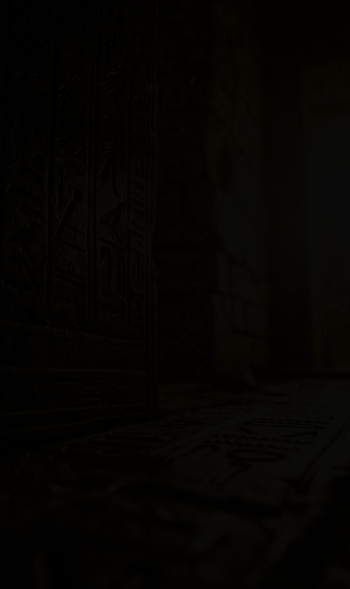

Égypte Éternelle · Dossier Thématique
Des grands mythes de la création aux amulettes portées par les vivants et les morts — les objets, les récits et les symboles au cœur de la civilisation pharaonique
𓂀 Navigation
Les Grands Mythes Cosmiques
𓇳La Création du mondeCosmogonie 𓂀L'Œil de Rê — La déesse lointaineMythe solaire 𓁹Le Meurtre et la résurrection d'OsirisCycle osirien 𓆣Le Voyage nocturne du soleilAmdouat 𓅃Le Procès d'Horus contre SethMythologie royale 𓃠La Destruction de l'HumanitéMythe eschatologiqueAmulettes & Symboles Sacrés
☥L'Ânkh — Clé de vieAmulette 𓆣Le Scarabée sacréAmulette 𓂀L'Oudjat — Œil d'HorusAmulette 𓊽Le Pilier DjedSymbole 𓋹Le Tyet — Nœud d'IsisAmulette 𓆸Le Lotus bleu — Fleur de renaissanceSymbole 𓆙L'Uræus — Le cobra royalInsigne royalSceptres, Couronnes & Insignes Royaux
𓌀Le Heqa, le Nekhakha, le WasSceptres 𓋹Les Couronnes pharaoniquesCouronnes 𓇳Le Cartouche royalHiéroglyphePremière partie · Récits fondateurs
Les récits qui expliquent l'origine du monde, le pouvoir des dieux et le destin de l'âme humaine.
Mythes cosmiques · Cosmogonie
Contrairement aux civilisations monothéistes qui ont une seule cosmogonie canonique, l'Égypte ancienne en a entretenu quatre simultanément, sans les unifier ni les hiérarchiser. Ces récits de la création — théologies d'Héliopolis, de Memphis, d'Hermopolis et de Thèbes — ne sont pas contradictoires aux yeux des Égyptiens : ils sont des approches complémentaires d'un mystère inépuisable.
Toutes les cosmogonies s'accordent sur un point : avant la création existait le Noun — l'océan primordial infini, obscur, immobile et silencieux. Le Noun n'est pas le néant : il est la potentialité absolue, l'énergie brute non différenciée qui contient tout sans être encore rien. Il n'y a ni haut ni bas, ni jour ni nuit, ni dieu ni homme. Il y a seulement l'eau sombre et l'attente du premier instant.
Héliopolis — La création par Atoum
Le dieu Atoum surgit spontanément du Noun et se hisse sur la colline primordiale (benben). Seul, il engendre Chou (l'air) et Tefnout (l'humidité) par masturbation ou par crachement. De ces deux enfants naissent Geb (la terre) et Nout (le ciel), séparés par Chou qui s'interpose entre eux — formant ainsi la structure tripartite de l'univers. Les quatre enfants de Geb et Nout (Osiris, Isis, Seth, Nephtys) achèvent l'Ennéade des neuf dieux primordiaux.
Memphis — La création par la Parole de Ptah
Le Texte memphite (Stèle de Chabaka, VIIe siècle av. J.-C., mais copie d'un original de l'Ancien Empire) propose une cosmogonie d'une modernité philosophique saisissante : Ptah crée l'univers par la pensée (sia, le cœur qui conçoit) et la parole (hu, la langue qui prononce). Il suffit à Ptah de concevoir et de nommer pour que les choses existent. Cette théologie du logos créateur préfigure le prologue de l'Évangile de Jean avec une troublante précision.
Hermopolis — La création par l'Ogdoade
Huit dieux primordiaux (l'Ogdoade : quatre couples mâle-femelle représentant l'eau, l'obscurité, l'infini et l'invisibilité) agitent le Noun jusqu'à ce qu'un lotus surgisse de ses eaux. De ce lotus naît le soleil enfant, et de ses premiers rayons jaillit la vie. Version plus poétique et plus collective : ce n'est pas un dieu unique qui crée, mais la coopération de forces élémentaires en équilibre.
Thèbes — Amon le Caché, créateur invisible
Amon, « le Caché », est le vent invisible qui parcourt le Noun avant la création. Son souffle anime tout ce qui existe. Il se révèle sous la forme du soleil au premier matin, mais sa nature reste fondamentalement cachée — même aux autres dieux. Cette théologie insiste sur le mystère irréductible de l'origine : le dieu qui crée ne peut jamais être pleinement connu.
Il n'y avait pas encore les deux terres, pas de sol, pas de serpent, pas de peur. J'ai tout fait venir à l'existence lorsque j'étais encore seul dans l'eau, engourdi, avant que je n'aie trouvé où me tenir.
— Atoum s'adressant au Noun, Textes des Sarcophages, Formule 76, ~2000 av. J.-C.Mythes cosmiques · Mythe solaire
L'œil de Rê est l'un des mythes les plus répandus et les plus complexes de la religion égyptienne — un récit qui articule la menace de l'obscurité, la puissance féminine incontrôlable et la nécessité de l'apaisement rituel. L'œil est à la fois un organe solaire (la lumière que Rê projette sur le monde) et une divinité autonome — généralement féminine — capable d'agir indépendamment de son propriétaire.
Dans la version principale du mythe, Rê envoie son œil chercher ses deux premiers enfants, Chou et Tefnout, partis explorer l'obscurité du Noun. L'œil revient mais trouve à sa place un œil de remplacement que Rê s'est fait fabriquer entre-temps. Furieuse, l'œil originale pleure de rage — et de ses larmes naquirent les premiers hommes (rmt, « les larmes », joue sur l'homophonie en égyptien). Rê console son œil et le place sur son front sous la forme du cobra uræus, insigne royal par excellence.
Dans une autre version (le mythe de la déesse lointaine), l'œil s'enfuit volontairement en Nubie sous la forme d'une lionne furieuse (Sekhmet ou Tefnout). Sans son œil, Rê s'affaiblit et le monde perd sa lumière. Les dieux envoient Thot ou Chou pour la ramener, par des paroles douces, des danses et de la musique. La déesse se métamorphose progressivement de lionne en chatte puis en femme apaisée — et la lumière revient au monde.
𓂀 Résonance astronomique
Ce mythe a probablement une dimension astronomique : le « départ » de l'œil de Rê pourrait représenter les éclipses solaires, ou les périodes où l'étoile Sirius (associée à Isis) disparaît de l'horizon pendant soixante-dix jours avant de reparaître à la saison de la crue nilotique. Le retour de l'œil coïnciderait avec ce lever héliaque de Sirius — événement fondamental du calendrier égyptien.
Mythes cosmiques · Monde souterrain
Chaque soir, le soleil disparaît à l'ouest et embarque pour un voyage de douze heures dans le monde souterrain (Douat) — un univers parallèle peuplé de dieux, de morts, de démons et de gardiens. Ce voyage n'est pas métaphorique aux yeux des Égyptiens : c'est un périple réel, documenté heure par heure dans les grands textes funéraires du Nouvel Empire que les Modernes ont appelé collectivement les Livres du monde souterrain.
L'Amdouat (imj-dwȝt, « Ce qui est dans l'au-delà ») est le plus ancien de ces textes : gravé dans les tombes royales depuis Thoutmôsis Ier (~1500 av. J.-C.), il décrit les douze heures du voyage solaire avec une précision cartographique saisissante, chaque heure correspondant à une région différente du monde souterrain, avec ses habitants, ses dangers et ses rituels de passage.
La première heure voit Rê entrer dans la Douat à bord de sa barque nocturne, accueilli par les dieux et les âmes bienheuereuses. Les heures suivantes l'emmènent à travers des portes gardées par des serpents cracheurs de feu, des lacs de feu, des salles de jugement. À la sixième heure — minuit cosmique — Rê fusionne momentanément avec le corps d'Osiris couché dans son caveau : la rencontre du soleil et de la mort, instant de mort et de renaissance simultanées, moment de puissance maximale et de vulnérabilité absolue. À la douzième heure, le scarabée Khépri propulse la barque à travers le corps du serpent Apophis vaincu, et le soleil renaît à l'est.
Les morts dans la Douat entendent la voix de Rê passer dans la nuit et s'éveillent un bref instant. Puis il passe, et ils retombent dans leur sommeil. Mais ce bref éveil leur donne force pour l'éternité.
— D'après l'Amdouat, heure IV, tombe de Thoutmôsis III (KV34), ~1450 av. J.-C.𓆣 La Douat — Géographie de l'au-delà
La Douat n'est pas localisée sous la terre : elle est un espace mystique parallèle, accessible à l'ouest (direction de la mort, du coucher du soleil) mais aussi dans le ciel étoilé (les étoiles sont les âmes des morts) et dans les profondeurs du Nil. Sa géographie change selon les textes et les époques, mais certains éléments sont constants : les douze cavernes horaires, le lac de feu, les gardiens à têtes d'animaux, la salle du jugement d'Osiris.
Mythes cosmiques · Eschatologie
Le Livre de la Vache Céleste, texte du Nouvel Empire gravé dans plusieurs tombes royales de la Vallée des Rois, raconte le seul mythe égyptien qui s'apparente à un déluge ou une apocalypse : la punition quasi-totale de l'humanité pour avoir comploté contre le dieu solaire vieillissant.
Selon ce récit, au temps où Rê régnait encore sur la terre parmi les hommes, les humains commencèrent à se moquer de lui en voyant son corps vieillir — ses os devenaient d'argent, sa chair d'or, ses cheveux de lapis-lazuli. Il convoqua le tribunal divin et décida d'envoyer son œil sous la forme d'Hathor-Sekhmet pour châtier les rebelles. La déesse lionne commença un massacre qui menaçait d'anéantir toute l'espèce humaine. Rê, pris de pitié, décida d'arrêter la tuerie — mais Sekhmet était en proie à une frénésie meurtrière incontrôlable.
Le stratagème imaginé par les dieux est d'une saveur unique dans toute la mythologie mondiale : ils teignirent 7 000 jarres de bière en rouge avec de l'ocre, pour qu'elles ressemblent à du sang, et les déversèrent dans les champs au matin. Sekhmet, croyant voir du sang, but frénétiquement jusqu'à l'ivresse complète — et se rendormit, se réveillant sous la forme douce d'Hathor. Le genre humain fut sauvé.
𓃠 La retraite de Rê dans le ciel
Après cet épisode, Rê, épuisé et dégoûté de gouverner les hommes, se retira dans le ciel en montant sur le dos de la déesse Nout transformée en vache céleste. Les étoiles que l'on voit la nuit sont les dieux qui suivirent Rê dans son ascension. Les hommes restèrent seuls sur terre — et c'est depuis lors qu'ils meurent, qu'ils combattent et que la vie est difficile. Ce mythe explique non seulement la retraite de Rê, mais aussi la condition humaine dans sa mortalité et sa violence.
« Je suis le Noun, le plus ancien, père des dieux. Je suis le grand dieu qui s'est formé lui-même, qui a créé son propre nom. »
Deuxième partie · Objets de puissance
Les objets qui canalisent les forces divines — portés par les vivants, déposés avec les morts, gravés sur les temples.
Amulettes · Symbole universel
L'ânkh est le symbole le plus reconnaissable de l'Égypte ancienne — et l'un des plus beaux mystères iconographiques de l'Antiquité. Ce signe en forme de croix surmontée d'une boucle ovale représente le concept même de vie (ˁnḫ en égyptien), mais aussi l'immortalité, le souffle vital, l'union du ciel et de la terre, du masculin et du féminin. Son origine formelle reste discutée par les égyptologues : sandale vue de profil ? Nœud de ceinture ? Bouclier ? Organes reproducteurs stylisés ? Chaque théorie a ses partisans, aucune n'est définitivement établie.
Dans les représentations monumentales, les dieux tiennent l'ânkh à la main comme un sceptre — parfois le portant aux narines du pharaon ou d'un défunt pour leur insuffler le souffle de vie divine. Cette scène de vivification apparaît dans des milliers de reliefs de temples et de tombes. Les dieux offrent l'ânkh, les pharaons le reçoivent — transaction éternelle entre le monde divin et le monde humain.
L'ânkh figure parmi les amulettes funéraires les plus répandues : des milliers d'exemplaires en faïence turquoise, en or, en cornaline, en lapis-lazuli ont été retrouvés dans les tombes, glissés dans les bandelettes des momies pour leur assurer la vie éternelle. Sa forme influencera le crux ansata des chrétiens coptes d'Égypte qui l'adoptèrent au IVe siècle, y voyant une préfiguration de la croix — symbiose iconographique qui assura sa survie dans la tradition visuelle jusqu'à nos jours.
☥ L'ânkh et les Coptes
Lorsque le christianisme se répandit en Égypte au IIe-IIIe siècle apr. J.-C., les chrétiens égyptiens (Coptes) adoptèrent l'ânkh comme symbole de la résurrection et de la vie éternelle — y ajoutant une signification christologique. Cette adoption n'était pas une rupture mais une continuité : la même promesse d'immortalité, reformulée dans un nouveau langage. Le crux ansata copte (croix en anse) est directement issu de l'ânkh pharaonique.
Amulettes · Insecte sacré
Le Scarabaeus sacer — le bousier sacré — est l'insecte le plus important de toute l'histoire des religions. Son comportement obsédait les Égyptiens : le bousier male roule une boule de fumier (contenant ses œufs) sur le sol en la poussant vers l'est, puis l'enterre. Trente jours plus tard, des larves en sortent spontanément, sans que les Égyptiens puissent percevoir d'accouplement préalable. La vie surgissant de la matière morte, l'être naissant du néant — métaphore parfaite de la création et de la résurrection.
Le dieu Khépri, manifestation matinale du soleil, est représenté comme un scarabée ou un homme à tête de scarabée. Il roule la boule du soleil — comme le bousier roule sa boule — de l'est vers le zénith chaque matin. Le nom Khépri vient du verbe kheper (exister, se transformer), et le hieroglyphe du scarabée 𓆣 sert lui-même à écrire le mot « être, devenir, transformer ».
Les scarabées-amulettes sont de loin les objets les plus produits de toute l'Égypte ancienne. On en a retrouvé des millions, de toutes tailles, dans pratiquement toutes les tombes et tous les niveaux sociaux. Les plus humbles sont en faïence (quartz fritté recouvert d'un émail bleu-vert) et valaient quelques denrées. Les plus précieux sont en or massif, en lapis-lazuli d'Afghanistan, en cornaline d'Arabie, en améthyste de Nubie. La face plate du scarabée porte généralement une inscription : un nom propre, un nom royal, une formule magique ou un vœu de protection.
Le scarabée-cœur mérite une mention à part : ce grand scarabée en pierre dure (stéatite noire, basalte) était placé sur la poitrine de la momie à la hauteur du cœur. Il portait gravée la formule magique du Chapitre 30 du Livre des Morts : « Ô mon cœur de ma mère, ô mon cœur de mes différentes formes, ne te dresse pas contre moi comme témoin, ne t'oppose pas à moi devant le tribunal… » — prière touchante pour que le cœur ne révèle pas les péchés de son propriétaire lors du jugement.
Le scarabée est la condensation de toute la théologie égyptienne en un seul objet : la mort, la renaissance, la transformation, le soleil, la protection — tout cela dans un insecte de quelques centimètres qui pousse une boule dans la poussière.
— Meskell, L., Object Worlds in Ancient Egypt, Berg, 2004Amulettes · Œil protecteur
L'oudjat est la représentation de l'œil gauche d'Horus — celui qui fut arraché et brisé par Seth lors de leur combat pour le trône d'Égypte, puis restauré dans son intégrité par Thot grâce à la magie. Son nom même signifie « l'intègre, le sain, le complet » — opposé à l'œil blessé et fragmenté. Cette histoire fait de l'oudjat le symbole par excellence de la guérison, de la restauration et de la protection contre toute force maléfique.
L'oudjat est dessiné avec une précision remarquable : l'œil humain stylisé est complété par deux éléments caractéristiques — la marque faciale du faucon (trait vertical sous l'œil) et la spirale de sourcil. Ces éléments lui confèrent une tension entre le naturalisme et l'abstraction géométrique particulièrement saisissante. Sa forme a traversé les millénaires : on retrouve l'oudjat sur les proues des bateaux de pêche méditerranéens jusqu'au XXe siècle — en Italie, en Grèce, en Tunisie — protection héritée sans solution de continuité depuis les bateaux nilotiques de l'Égypte ancienne.
L'oudjat possède une dimension mathématique fascinante : chacune des parties de l'œil dessiné correspond à une fraction hiéroglyphique spécifique — 1/2, 1/4, 1/8, 1/16, 1/32, 1/64. L'ensemble additionné donne 63/64 — pas tout à fait 1. La 64e partie manquante était, dit-on, complétée par Thot magiquement. Ce système de fractions binaires apparaît dans le Papyrus Rhind (le plus ancien manuel de mathématiques connu) et servait à mesurer les capacités des récipients à grain.
𓂀 L'oudjat et la pharmacie
Les prescriptions médicales égyptiennes utilisaient les fractions de l'oudjat pour mesurer les doses de médicaments. Chaque composante dessinée de l'œil représentait une fraction de heqat (mesure de capacité). Ainsi, la médecine égyptienne liait l'acte médical au symbole de la guérison divine — soigner était un acte à la fois pratique et rituel.
Symboles sacrés · Stabilité divine
Le djed est l'un des plus anciens symboles d'Égypte — présent dès la période prédynastique — et l'un des plus riches en significations. Sa forme, sorte de pilier strié de bandes horizontales surmontées de quatre anneaux superposés, a été interprétée de plusieurs façons par les Égyptiens eux-mêmes : colonne vertébrale d'Osiris (interprétation mythologique dominante), faisceau de gerbes de blé liées ensemble (interprétation agricole, renvoyant à la fertilité), ou tronc de cèdre dont on aurait taillé les branches (interprétation rituelle liée à Busiris).
La cérémonie du Relèvement du Djed (seked djed) était l'un des rites royaux les plus importants d'Égypte : lors de la fête de Sokar (fête funéraire thébaine du mois de Khoiak), le pharaon relevait rituellement un grand pilier djed couché — geste symbolisant la résurrection d'Osiris, debout et triomphant de la mort. Ce rite royal affirmait que le cycle de vie-mort-résurrection continuait sous la protection du roi.
Le djed figure parmi les amulettes funéraires du Chapitre 155 du Livre des Morts : placé sur la gorge de la momie (parfois en or), il lui garantissait la stabilité et la résurrection. La formule qui l'accompagne dit : « Tu te lèves, ô Osiris ! Tu as ta colonne vertébrale, ô Osiris au cœur las ! »
Le djed et le tyet (nœud d'Isis) sont toujours associés — l'un masculin (Osiris, stabilité), l'autre féminin (Isis, protection). Leur combinaison dans les ornements funéraires garantit à la fois la résurrection et la protection magique.
Le sceptre composite de Ptah intègre le djed comme élément central, associé à l'ânkh et au sceptre was — triade des concepts divins de stabilité, vie et puissance.
Symboles sacrés · Flore divine
Le lotus est l'une des plantes les plus sacrées d'Égypte — et sa signification cosmique est directement liée à un comportement botanique que les Égyptiens observaient avec fascination : le Nymphaea caerulea (lotus bleu du Nil) s'ouvre précisément au lever du soleil et se referme le soir pour s'enfoncer sous l'eau. Chaque matin, il émerge de l'eau sombre, épanouit ses pétales et dégage un parfum enivrant — métaphore parfaite du soleil renaissant des eaux du Noun.
Dans la cosmogonie d'Hermopolis, c'est précisément d'un lotus surgissant du Noun que naît le soleil enfant lors du premier matin de la création. Cette image est représentée des milliers de fois : un lotus ouvert d'où émerge le buste ou le visage d'un enfant au crâne rasé, une boucle de cheveux sur le côté — le dieu solaire Nefertoum, ou le jeune Horus, ou le soleil lui-même dans sa forme d'enfant divin.
Le lotus bleu avait également des propriétés pharmacologiques réelles : la Nymphaea caerulea contient des alcaloïdes psychoactifs (nuciférine, aporphine) aux effets légèrement narcotiques et euphorisants. Les scènes de banquets représentent souvent des convives tenant une fleur de lotus aux narines ou la trempant dans du vin — pratique rituelle et peut-être psychoactive qui renforçait l'expérience mystique et la joie des fêtes religieuses.
𓆸 Le papyrus — Compagnon végétal du lotus
Le papyrus (mehet) est l'autre plante sacrée fondamentale d'Égypte : emblème de la Basse Égypte (comme le lotus l'est pour la Haute Égypte), il représente la vitalité du Nil, la fertilité des marais et la fraîcheur de l'eau. Les colonnes à chapiteaux en forme de papyrus ou de lotus qui structurent les grandes salles hypostyles de Karnak et Louxor transforment littéralement les temples en forêts végétales sacrées — une cosmogonie architecturale.
Insignes royaux · Cobra sacré
L'uræus — du grec ouraios, transcription de l'égyptien iaret (« celle qui se dresse ») — est le cobra royal dressé qui orne le front du pharaon sur toutes les couronnes, les masques funéraires, les statues et les représentations royales. Ce cobra craché de feu est la déesse Ouadjet (déesse serpent de Bouto, en Basse Égypte) dans sa fonction protectrice — ou l'œil de Rê transformé en serpent cracheur de flammes, prêt à détruire tout ennemi qui oserait menacer le roi.
La signification de l'uræus est transparente dans sa symbolique : le pharaon qui porte ce cobra sur son front dispose du pouvoir de destruction divine. Ses ennemis seront consumés par le feu de l'œil solaire — cobra dont le venin, la morsure et le crachat de venin sont autant de métaphores des rayons du soleil ardent. L'uræus n'est pas seulement un ornement : c'est une arme divine portée en permanence par le roi.
𓆙 Le Double Uræus et le vautour
Certaines couronnes portent un double uræus : Ouadjet (cobra de Basse Égypte) et Nékhebet (vautour de Haute Égypte) côte à côte — symbole de la souveraineté sur les Deux Terres unifiées. Cette paire apparaît dès Narmer et constitue l'un des symboles de royauté les plus persistants de toute l'histoire égyptienne.
Troisième partie · Insignes du pouvoir
Les objets qui font le pharaon — chacun porteur d'une théologie du pouvoir divine et terrestre.
Insignes royaux · Sceptres divins
Les sceptres égyptiens ne sont pas de simples bâtons de cérémonie : ce sont des objets théologiques chargés de sens, chacun porteur d'un concept divin spécifique, hérités des dieux et transmis au pharaon comme marques visibles de sa nature divine.
| Sceptre | Forme | Signification | Porteur principal |
|---|---|---|---|
| Heqa (ḥqȝ) | Crosse recourbée | « Gouverner » — pouvoir pastoral, autorité du berger sur son troupeau humain. Le pharaon est le berger de l'Égypte. | Pharaon · Osiris momie |
| Nekhakha (nḫḫ) | Flagellum à trois branches | Puissance coercitive, fécondité (battre le grain), commandement absolu. Toujours tenu avec le heqa, ils forment la paire royale. | Pharaon · Osiris · Min |
| Was (wȝs) | Long bâton à tête d'animal (Seth ?) et pied bifurqué | « Puissance, domination, prospérité » — sceptre des grandes divinités mâles. Symbole de pouvoir divin par excellence. | Dieux mâles · pharaon debout |
| Sekhem (sḫm) | Long sceptre-palette à tête aplatie | « Puissance sacrée » — lié au pouvoir divin brut, à la déesse Sekhmet. Utilisé dans les rites de purification et les célébrations royales. | Prêtres · pharaon rituel |
𓌀 La crosse et le fléau dans la mort
Le heqa et le nekhakha sont les attributs caractéristiques d'Osiris dans son rôle de roi des morts : représenté comme une momie, bras croisés sur la poitrine tenant les deux sceptres, le dieu mort et ressuscité incarne la royauté permanente qui transcende la mort. Chaque pharaon mort devient Osiris et reçoit les mêmes attributs. La momie de Toutankhamon était elle-même représentée dans cette position sur son masque d'or.
Insignes royaux · Couronnes sacrées
Aucune couronne physique du pharaon n'a survécu jusqu'à nous — peut-être étaient-elles en matières périssables (tissu, cuir, végétaux), peut-être refondues, peut-être enterrées dans des tombes encore inviolées. Mais leurs représentations sont omniprésentes dans l'art égyptien, et chacune porte une signification précise.
Insignes royaux · Hiéroglyphe
Le cartouche est la signature graphique du pharaon — l'ovale allongé formé d'une corde nouée qui encercle ses deux noms principaux (le nom de Nebty et le nom de Sa-Rê). Son nom égyptien, shenou, dérive du verbe sheni (« encercler ») — et c'est précisément sa fonction : la corde noée symbolise tout ce qu'encercle le soleil, c'est-à-dire l'univers entier. Le pharaon dont le nom est inscrit dans un cartouche règne sur tout le cosmos.
La dimension protectrice est aussi cruciale : enfermer le nom dans un ovale fermé le protège contre toute altération ou destruction magique. Dans la pensée égyptienne, détruire le nom d'un être, c'est l'anéantir — c'est pourquoi les cartouches d'Akhénaton, d'Hatchepsout et de Toutankhamon furent martelés dans les temples après leur mort. Le cartouche est le dernier rempart contre l'effacement.
C'est un cartouche qui permit à Jean-François Champollion de déchiffrer les hiéroglyphes en 1822 : il identifia les cartouches de Ptolémée et Cléopâtre sur la Pierre de Rosette et d'autres obélisques, en reconnaissant que les ovales encerclaient des noms royaux à déchiffrer phonétiquement. Cette intuition fut le verrou qui ouvrit toute l'écriture égyptienne.
Quatrième partie · Paroles divines
Trois millénaires de formules magiques — des pyramides de l'Ancien Empire aux papyrus du Nouvel Empire.
Textes sacrés · Le plus ancien corpus religieux
Les Textes des Pyramides sont le corpus religieux écrit le plus ancien de l'humanité — les premières grandes collections de textes sacrés jamais gravées. Apparus sur les parois des chambres funéraires royales à partir du règne d'Ounas (Ve Dyn., ~2350 av. J.-C.) à Saqqarah, ils représentent pourtant une compilation de textes beaucoup plus anciens, certains peut-être antérieurs à l'écriture elle-même.
Ces textes sont des formules magiques destinées au roi défunt : formules d'ascension céleste (permettant au pharaon de rejoindre les étoiles circumpolaires, les dieux ou le soleil), formules d'identification (le mort devient Osiris, devient Rê, devient l'étoile), formules de protection contre les serpents et les forces hostiles, formules rituelles de purification, d'offrande et de réanimation. Ils sont gravés en hiéroglyphes peints de vert (couleur de la renaissance) sur fond blanc, couvrant les murs et plafonds des petites chambres souterraines.
Lève-toi, Ounas ! Tu n'es pas parti mort, tu es parti vivant. Assieds-toi sur le trône d'Osiris, ton sceptre de commandement dans ta main, pour donner des ordres aux vivants.
— Textes des Pyramides, Utterance 412, pyramide d'Ounas, ~2350 av. J.-C.Textes sacrés · Guide de l'au-delà
Son nom égyptien est Rw Nw Prt M Hrw — « Les Formules du Sortir du Jour » — et il décrit exactement son contenu : un ensemble de formules magiques permettant à l'âme défunte de sortir de la tombe le jour, de naviguer dans le monde souterrain, de passer les portes gardées par des créatures monstrueuses, de se présenter devant le tribunal d'Osiris et d'atteindre le Champ des Roseaux, paradis de l'éternité.
Contrairement aux Textes des Pyramides (réservés aux rois) et aux Textes des Sarcophages (réservés aux nobles), le Livre des Morts était disponible à quiconque pouvait se le payer. Les papyrus étaient produits en série par des ateliers de scribes, avec des blancs laissés pour le nom du défunt — personnalisation minimale d'un produit standardisé. Les plus luxueux, comme le Papyrus Ani (conservé au British Museum), mesurent plusieurs mètres de long et sont richement illustrés de vignettes en couleurs.
Au cœur du Livre des Morts, le Chapitre 125 décrit la scène du Jugement de l'âme avec une précision théâtrale saisissante. Le défunt, mené par Anubis dans la Salle des Deux Vérités, récite d'abord la confession négative : une liste de 42 péchés dont il affirme être innocent, chacun devant l'un des 42 juges assesseurs siégeant dans la salle. « Je n'ai pas commis de péché… Je n'ai pas volé… Je n'ai pas tué… Je n'ai pas fait pleurer… Je n'ai pas pollué les eaux… Je n'ai pas fabriqué de faux poids… » Puis son cœur est pesé contre la plume de Maât. Si le verdict est favorable, Thot le note et Osiris accorde l'accès au paradis.
𓁹 La démocratisation de l'au-delà
L'évolution des textes funéraires sur deux millénaires illustre une démocratisation progressive de l'espoir en l'immortalité : réservée au seul pharaon à l'Ancien Empire (Textes des Pyramides), puis aux nobles (Textes des Sarcophages au Moyen Empire), la promesse de résurrection devint accessible à tous au Nouvel Empire grâce au Livre des Morts — à condition d'en acheter une copie. Ce processus est l'un des plus remarquables de l'histoire religieuse humaine.
Cinquième partie · Pratiques sacrées
La magie égyptienne n'est pas de la superstition — c'est une technologie divine au service des vivants et des morts.
Magie & rituels · Force primordiale
La magie (héka) n'est pas en Égypte une pratique marginale ou suspecte — c'est une force cosmique fondamentale, aussi réelle et aussi nécessaire que la gravité ou la lumière. Héka est même personnifiée en un dieu mineur qui assiste Rê sur sa barque solaire. Selon les Textes des Pyramides, Héka existait avant les dieux eux-mêmes — c'est la puissance par laquelle Atoum créa l'univers, la force que Ptah exerça en concevant le monde dans son cœur.
La magie égyptienne est fondée sur deux principes : le pouvoir du nom (connaître le vrai nom d'un être ou d'une force, c'est en avoir le contrôle) et le pouvoir de la similitude (agir sur l'image ou la représentation d'une chose, c'est agir sur la chose elle-même). Ces deux principes expliquent toutes les pratiques magiques documentées : figurines ennemies percées d'épingles, formules récitées sur des nœuds, représentations d'animaux venimeux dans les tombes, amulettes portant les noms des dieux protecteurs.
Les prêtres-magiciens (hery-heb, porteurs du livre de fête) étaient des spécialistes formés à l'École de la Maison de Vie (Per-Ankh) — institution rattachée aux grands temples, conservant les textes sacrés et formant les officiants. La frontière entre médecine et magie était inexistante : un traitement médical efficace fonctionnait parce que la formule magique qui l'accompagnait activait la puissance divine des plantes et des minéraux.
La magie égyptienne n'est pas de la pensée magique — c'est une vision du monde dans laquelle le langage, les images et les symboles participent activement à la réalité qu'ils décrivent. C'est une linguistique cosmologique.
— Ritner, R.K., The Mechanics of Ancient Egyptian Magical Practice, SAOC 54, 1993Rituels funéraires · Technique divine
La momification est l'une des contributions les plus originales de la civilisation égyptienne à l'histoire humaine — et l'une des procédures médicales et rituelles les plus sophistiquées de l'Antiquité. Elle repose sur un postulat théologique fondamental : pour que l'âme (ba) puisse revenir habiter le corps après le jugement et obtenir la résurrection, le corps physique doit être préservé intact — ou du moins reconnaissable — pour l'éternité.
Le processus dure exactement soixante-dix jours — nombre qui correspond à la période de disparition de l'étoile Sirius sous l'horizon (avant son lever héliaque annonçant la crue du Nil), et donc à la mort et renaissance cosmique. Il commence par l'extraction des viscères (foie, poumons, estomac, intestins) conservés dans les vases canopes ; le cerveau est extrait par une spatule métallique introduite par la narine gauche (les Égyptiens n'avaient aucune idée de sa fonction cognitive — ils pensaient que la pensée siégeait dans le cœur). Le corps est ensuite déshydraté dans le natron (sel naturel de carbonate de sodium) pendant quarante jours, puis oint de résines aromatiques (cèdre, myrrhe, baies de genévrier), bourré de lin et de sciure, et enfin soigneusement bandé en plusieurs couches de lin fin.
𓀭 Les cinq composantes de l'être — La complexité de l'âme égyptienne
La conception égyptienne de la personne humaine est d'une sophistication remarquable — bien plus complexe que le simple couple corps/âme des pensées occidentales. L'être humain est composé de : le Khat (corps physique), le Ka (double vital, énergie de vie transmise à la naissance), le Ba (âme individuelle, souvent représentée en oiseau à tête humaine), l'Akh (esprit transfiguré de l'être ressuscité), et le Ren (le nom, qui doit être prononcé pour que l'être continue d'exister). La momification préserve le Khat, les offrandes nourrissent le Ka, les formules activent le Ba et le Ren.
Objets funéraires · Les fils d'Horus
Les vases canopes sont les quatre récipients qui conservent les viscères extraits lors de la momification — foie, poumons, estomac, intestins. Leurs couvercles représentent les têtes des quatre fils d'Horus, divinités protectrices des organes :
| Fils d'Horus | Tête | Organe protégé | Déesse tutélaire |
|---|---|---|---|
| Amset | Homme | Foie | Isis |
| Hâpy | Babouin | Poumons | Nephtys |
| Douamoutef | Chacal | Estomac | Neith |
| Qébehsénouf | Faucon | Intestins | Selkis |
Les ouchebtis (ou chaouabtis, ou ouchebtis selon les périodes) sont de petites figurines funéraires en forme de momie — en faïence, bois ou calcaire — déposées par centaines dans les tombes. Leur nom signifie « le répondant » — car leur fonction est de répondre à la place du défunt lorsque les dieux l'appelleront pour effectuer des corvées agricoles dans l'au-delà. La formule gravée sur chaque ouchebti dit : « Ô ouchebti, si on m'appelle pour des travaux dans le Champ des Roseaux… tu diras : Me voici ! » Des tombes royales du Nouvel Empire contenaient jusqu'à 401 ouchebtis — un pour chaque jour de l'année plus un contremaître pour chaque groupe de dix travailleurs.
𓇾 Le mobilier funéraire complet
Une tombe égyptienne bien équipée contenait tout ce dont le défunt aurait besoin pour l'éternité : nourriture et boisson (offrandes réelles ou représentées), meubles, vêtements, outils, bijoux, instruments de musique, jeux (senet), statuettes de serviteurs, modèles de bateaux, papyrus du Livre des Morts, stèles, et les vases canopes et ouchebtis. La tombe est littéralement une maison équipée pour l'éternité — une continuité parfaite de la vie terrestre dans la vie post-mortem.
𓂀 Sources & Lectures recommandées